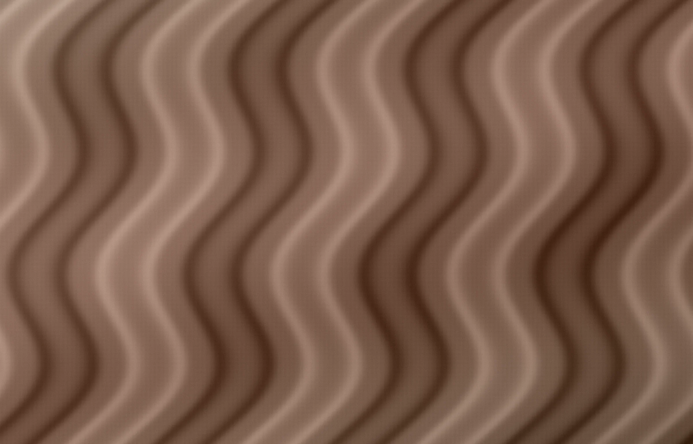
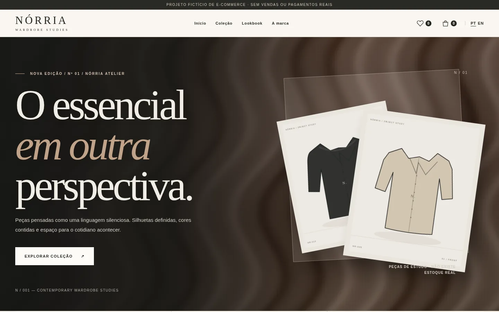
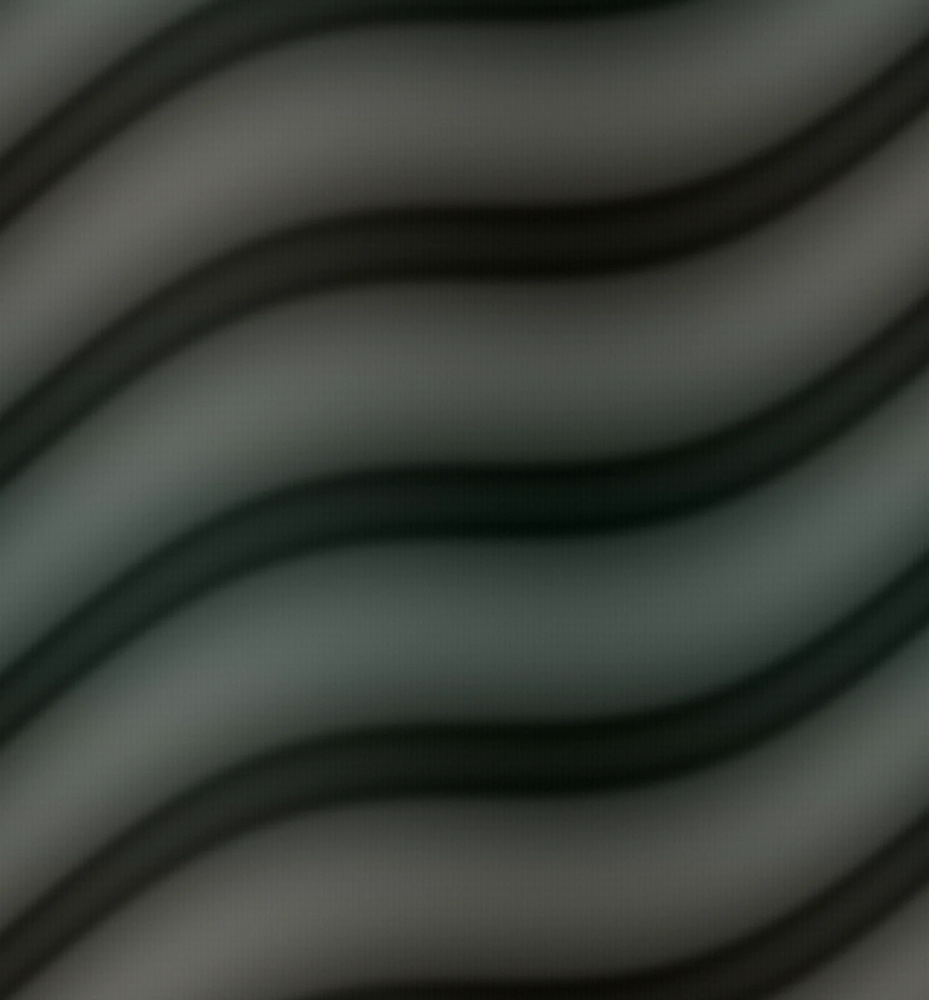
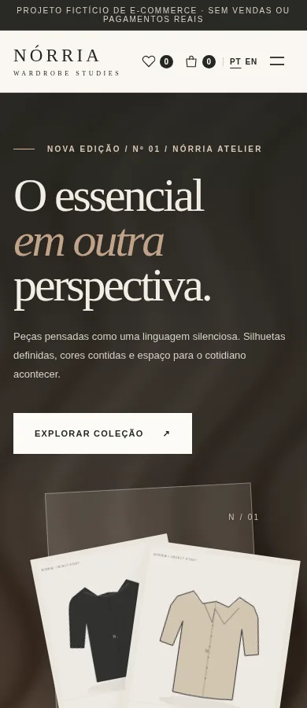

Atmosfera com direção
O editorial apresenta o universo da marca sem esconder caminhos para o catálogo.
Estudo de caso / 04 — 04
Moda · E-commerce conceitual
Um guarda-roupa contemporâneo, em cada interação.
Uma marca de moda autoral com catálogo navegável, variações de produtos, favoritos, sacola e checkout demonstrativo.

Uma marca de roupas precisa combinar linguagem visual marcante com respostas simples: quais modelos existem, que tamanhos estão disponíveis, quais cores escolher e o que está na sacola. A proposta conecta o editorial a essas tarefas sem sacrificar nenhuma delas.
Pessoas que exploram peças essenciais, com atenção a materiais, variantes e uma jornada de compra transparente.
Identidade, coleção, 24 produtos ilustrados, filtros, favoritos, sacola e checkout demonstrativo.
Brand Design / E-commerce / UI/UX
Tipografia de moda, texturas têxteis e uma paleta de carvão, areia e cobre constroem reconhecimento. A campanha estabelece a personalidade; o design de produto organiza cores, tamanhos e estados de interação.
Carvão traz contraste; o bronze cria um acento caloroso; a areia funciona como base para fotografia e produto.
 01 — Direção visual
01 — Direção visualO editorial apresenta o universo da marca sem esconder caminhos para o catálogo.
Cor, tamanho e quantidade são escolhas explícitas na página de produto.
Sacola e checkout mostram resumo, totais e confirmação da simulação.
Campanha, coleções e lookbook.
Busca, filtros, ordenação e favoritos.
Seletores de cor, tamanho e quantidade.
Sacola persistente e checkout demonstrativo sem cobrança.
O catálogo e a página de produto foram desenhados para transformar uma narrativa de marca em ações objetivas. As imagens a seguir são capturas do e-commerce implementado.



Uma marca de moda autoral com catálogo navegável, variações de produtos, favoritos, sacola e checkout demonstrativo.
Explorar a experiênciaPeças com nomes, materiais, preços demonstrativos e variantes.
Exploração com filtros e persistência local.
Adicionar, remover, alterar quantidades e calcular subtotal.
Etapas de identificação, entrega e revisão, sem pagamento real.
A NÓRRIA demonstra branding e um fluxo de comércio eletrônico navegável. Os produtos são ilustrados e a finalização não cria pedidos nem cobra valores.
Sobre as imagens. Imagens editoriais e peças ilustradas são recursos conceituais; não são fotografias de produtos comercializados.
Próximo projeto / 01 — 04
ESTARÉLIA